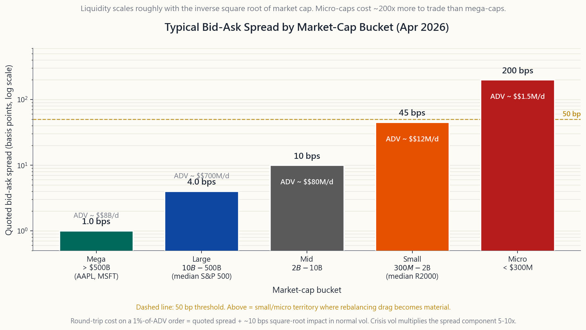
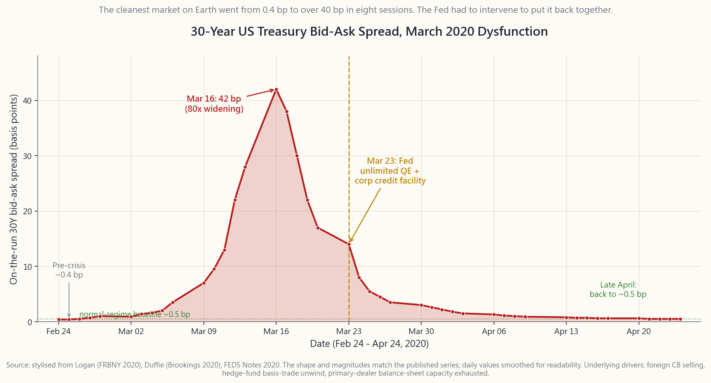

Side Lesson 26: Market Liquidity — Depth, Spread, and What Really Happens in a Crisis
1. Why This Is Important
Liquidity is the single most under-appreciated risk in retail portfolios. Returns get all the headlines; liquidity gets all the obituaries. Every major blow-up in the last forty years — 1987, 1998, 2008, 2010, 2020, 2022 — had a liquidity component bolted onto whatever fundamental trigger started it. Vol-tail-wags-dog is really a liquidity statement: when volatility doubles, the cost of getting out of a position quintuples, and it is that second leg that does the damage.
There are four reasons a retail investor needs a working model of liquidity.
noise. A 50 bp round-trip on a $300M small-cap, paid four times a year through rebalancing, eats 200 bps off your return — bigger than most factor premia (week50). You cannot decide what to own until you can price the cost of getting in and out.
In March 2020 the cleanest, deepest market on Earth — the 30-year on-the-run US Treasury — went from a half-basis-point bid-ask to forty basis points in eight trading days, and the Fed had to intervene to put it back together. If that can happen to the benchmark risk-free asset, your small-cap value sleeve is not special.
you.** A 401(k) that you cannot draw for thirty years can hold illiquid private credit or non-traded REITs (side14). A taxable account that funds tuition in two years cannot. The four-tranche framework is, at heart, a liquidity tiering exercise.
BTFP — every emergency facility named in the last two cycles is a targeted plug into a specific drained pool. Knowing which facility addresses which pool tells you who is solvent and who is not when the next round comes.
This side lesson installs the vocabulary, the proxies, the historical case studies, and a working calculator so that "is this thing liquid?" becomes a question you can answer with numbers, not adjectives.

2. What You Need to Know
2.1 The Three Dimensions of Liquidity — Tightness, Depth, Resilience
Academics divide liquidity into three dimensions that are usually correlated but can decouple violently in stress.
Tightness is the bid-ask spread — the round-trip cost of trading a single share at the touch. On AAPL during a normal session you will see $0.01 on a $200 stock — half a basis point. On a $5 micro-cap you might see $0.05 — 100 basis points. Tightness is what you see; it is the most visible dimension and the only one most retail traders track.
Depth is the size resting at the touch. AAPL might show 50,000 shares offered at the inside. A small-cap might show 200. Depth tells you how big you can trade before you start walking the book — eating through successively worse-priced limit orders. The Almgren-Chriss square-root impact model (week44) says cost in bps grows like the square root of trade-size-as-percent-of-ADV: a 1%-of-ADV order is about 10 bps of impact in normal vol, a 10% order is about 32 bps, a 100% order is about 100 bps.
Resilience is how fast the book replenishes after you trade. A deep, resilient market lets a market-maker walk back to within 1 bp of the prior mid in seconds. A fragile market — one where the displayed depth is spoofed by HFTs that vanish when stress hits — gaps and stays gapped. The classic resilience failure was the May 6, 2010 flash crash, when bona-fide market-makers withdrew quotes and SP500 e-minis fell 9% in five minutes against a thin book that took twenty minutes to rebuild.
2.2 Liquidity Proxies — What to Measure When You Can't See the Book
You will rarely have direct access to the limit order book outside of exchange-paid data feeds. Four proxies that approximate the three dimensions, all available in any retail data package:
of tightness. Apr 2026 typical print: SPY 0.5 bps, AAPL 1 bp, median S&P 500 name 4 bps, median Russell 2000 name 25 bps, median micro-cap 150 bps.
measure of capacity. Apr 2026: SPY $30B/day, AAPL $14B, median S&P 500 name $400M, median Russell 2000 name $25M, median micro-cap under $500k.
volume. Higher = more price reaction per dollar traded = illiquid. Empirically the cleanest single-number cross-sectional liquidity score.
100-200% turnover; micro-caps often under 20%. Low turnover means a name is available but not flowing — a thin holder base that does not absorb a forced seller without price impact.
For ETFs there is a fifth proxy worth a paragraph on its own: the creation/redemption arbitrage keeps the ETF's premium-to-NAV tight because authorised participants (APs) profit from any meaningful gap (side03). For SPY, premium rarely strays more than 2 bps from NAV during a normal session. But the AP arbitrage is a capacity-limited mechanic — when underlying basket liquidity dries up, AP balance sheets can't absorb creation flow, and the ETF can detach from NAV by 100+ bps (March 2020 LQD: NAV-discount of 5%).
2.3 The Stylised Liquidity Curve — Why Small-Caps Cost 50x More
Across the US-listed universe, bid-ask spreads scale roughly with the inverse square root of market cap, with a sharp non-linear blow-out below $1B.
| Bucket | Cap range | Typical spread | Typical ADV | Round-trip cost |
|---|---|---|---|---|
| Mega | > $500B | 1 bp | $5-30B | <5 bps |
| Large | $10B - $500B | 2-5 bps | $200M-$5B | 5-10 bps |
| Mid | $2B - $10B | 5-15 bps | $30-200M | 15-40 bps |
| Small | $300M - $2B | 25-60 bps | $3-30M | 50-150 bps |
| Micro | < $300M | 100-300 bps | < $3M | 200-600 bps |
Round-trip cost includes spread plus square-root impact for a 1% ADV order. A retail investor who buys AAPL pays ~5 bps to get in and out. A retail investor who tries to build a $50,000 position in a $200M micro-cap pays 400-600 bps in one direction — and may not be able to exit at all in stress.
2.4 ETFs vs Underlying Basket Liquidity — The AP Backstop
The standard argument for owning fixed-income via ETF (LQD, HYG, MUB, TLT) rather than the underlying bonds is that the ETF wrapper trades 1000x more liquidly than the basket. LQD averages $2-3B/day in on-screen volume; the median bond inside it changes hands on TRACE maybe twice a week. The wrapper is the liquidity.
This works in normal regimes because APs arbitrage any wrapper-vs-NAV gap. It can break in stress. March 2020 LQD: ETF traded at NAV-minus- 4.6% on March 12; HYG hit NAV-minus-7.0%. The Fed's announcement of SMCCF/PMCCF (corporate-credit facilities) on March 23 closed those discounts inside 48 hours and they have not reopened. The lesson is not "don't own bond ETFs" — they are the only practical way for a retail investor to hold credit. The lesson is that *during a once-a- decade liquidity event the wrapper can detach by 5%, and you should not need to sell it that day.*

2.5 Liquidity Vanishes When Needed — The Three Canonical Crises
Three case studies, each illustrating how liquidity disappears in exactly the regime when an investor most wants to use it. They are the empirical foundation for the vol-tail-wags-dog observation.
March 2020: Treasury market dysfunction. The on-the-run 30-year US Treasury — the deepest, most liquid asset on the planet — saw bid-ask spreads explode from sub-1 bp to over 40 bps between March 9 and March 17, 2020. Off-the-run spreads were worse. Cause: foreign central banks selling Treasuries to fund USD redemptions; hedge funds unwinding relative-value Treasury basis trades amid margin calls; primary dealer balance sheets full from Treasury issuance and unable to absorb more. The Fed responded with $1.5T in repo operations on March 12, then unlimited QE on March 23, restoring spreads to near-normal by April.
May 2010: Flash crash. On May 6 at 14:42 ET, a single $4.1B e-mini S&P sell algorithm executed without price/time discretion. Liquidity providers withdrew. The S&P fell 9% in five minutes. Hundreds of stocks printed at "stub quotes" of $0.01. Recovery took 20 minutes. Cause: a thin order book at lunch, fragmented routing across 13 exchanges, and HFTs whose quotes were not obligated to provide depth. SEC response: limit-up/limit-down (LULD) bands, single-stock circuit breakers, and the IEX 350μs speed bump (week44).
August 2007: The quant unwind. Long-short equity-market-neutral funds running similar value/momentum factor portfolios suffered simultaneous losses August 6-9, 2007. The mechanism: one or two levered shops were forced to reduce exposure (subprime margin calls elsewhere); their selling moved factor returns; everyone running the same factors saw losses; the strongest funds also had to delever; the selling fed itself for three days. Renaissance lost ~6% in 48 hours. Goldman's Global Equity Opportunities lost 30% over a week. By the end of the second week, factors fully recovered. The lesson: in crowded low-vol strategies, liquidity withdrawal manifests as a correlation spike — every "uncorrelated" trade becomes the same trade for as long as the unwind takes.
2.6 Fed Liquidity Toolkit — The Modern Backstop
Since 2008 the Fed has assembled a menu of liquidity facilities, each sized to a specific failure mode. They map directly onto the case studies above.
- Discount window (always-on): banks borrow against collateral.
- PDCF — Primary Dealer Credit Facility (2008, 2020, 2023): repo
- MMLF — Money Market Mutual Fund Liquidity Facility (2008,
- CPFF — Commercial Paper Funding Facility (2008, 2020):
- BCFP / SMCCF / PMCCF — Corporate Credit Facilities (2020): Fed
- BTFP — Bank Term Funding Program (2023): one-year loans against
The market lesson from 2008/2020/2023: the Fed will eventually restore liquidity to systemic markets, but the announcement effect matters more than the dollar size. Investors who waited for the announcement (March 23 in 2020) caught most of the recovery; investors who tried to time the bottom before the policy response mostly missed it. The market can stay irrational longer than you can stay solvent — but the Fed can keep you solvent if you survive long enough for the facility to arrive.
3. Common Misconceptions
indicative price. Depth at the touch can be $200 even when the spread is $0.01.
market impact is the other half. For 1%-of-ADV orders they are roughly equal. For larger orders, impact dominates.
normal regimes via the AP arbitrage. False in stress when AP balance sheets are full — see LQD March 2020.
activity. It does not tell you what the next million shares costs. A name can have $50M average volume and still cost 200 bps to move $5M in five minutes.
most liquid market on Earth. They were not in March 2020. The Fed had to intervene to make it true again.
a single sell algorithm without price discretion. HFTs amplified the move by withdrawing liquidity, but they did not cause it. The policy fix (LULD, circuit breakers) targeted the amplification.
thematic ARK product cannot. Fund AUM and underlying basket liquidity must be separately checked.
compensation for being illiquid in stress. The premium is real but you are paid to not be able to sell when everyone else is.
4. Q&A Section
Q1: How do I check the bid-ask spread on a stock I'm considering? A: Any retail platform shows top-of-book. Look at the displayed bid and ask, take the spread, divide by the midpoint, multiply by 10000 to get bps. Do this during regular hours — pre-market and after- hours spreads can be 5-10x wider. For meaningful comparison use the 3 PM ET print, when both market-makers and institutional order flow are most active.
Q2: What's the smallest market cap I should consider holding? A: For taxable accounts with rebalancing pressure, $2B is a reasonable floor — that's the small-cap line. Below $300M (micro-cap) the combined spread + impact + occasional gap risk usually exceeds the expected alpha. The Russell 2000 itself is ~$3B median; most retail factor ETFs (AVUV, VBR) screen out the bottom 10-20% of micro-caps explicitly.
Q3: Is bond ETF liquidity real or fake? A: Both. The wrapper liquidity is real and tradeable in any normal market. But it is backstopped by AP arbitrage on the underlying basket, and the basket itself trades by appointment. In March 2020 LQD detached from NAV by 4.6% and HYG by 7%. Owning bond ETFs is fine — sizing them as if they have stock-grade liquidity in a crisis is not.
Q4: Why does the bid-ask spread widen in volatile markets? A: Market makers price spread as compensation for adverse-selection risk plus inventory risk. Both rise with volatility. Empirically spreads are roughly proportional to realised volatility — VIX 30 implies spreads 2-3x the calm-market level; VIX 60 implies 5-10x. Crisis = spread 10x. This is deterministic, not surprising.
Q5: What is the "liquidity premium" I see in academic papers? A: The empirical compensation for holding illiquid assets, ~1-3%/yr across studies. It is real but it is not free money. You earn it by being unable to sell during the worst quarters — exactly when most investors most want to. Lock-up funds (PE, VC) capture it mechanically. Daily-priced retail products (small-cap value ETFs) capture maybe a third of it because the daily liquidity erodes the illiquidity advantage.
Q6: Can I use the Amihud ratio at home? A: Yes. Take 60 days of (|daily return|, daily dollar volume). Compute mean of |return|/$volume. Multiply by 10^6 to get a usable scale. Lower = more liquid. SPY scores ~0.001; a typical small-cap scores 1-10; a micro-cap can score 100+. It is a one-number proxy that ranks names well across a peer group.
Q7: How do I size a position in an illiquid name? A: Work backwards from the cost of exit. Pick a stress regime — say, 3x normal spread + 30% of ADV in one day (forced sell by Friday). Compute the round-trip cost. If it exceeds your one-year expected return, the name is too illiquid for the position size. If you cannot exit in five days at 2x normal spread, halve the size.
Q8: What was the market lesson from August 2007? A: Crowded trades are the same trade. Five "uncorrelated" hedge funds running similar value/momentum/quality factors all sold the same positions at the same time. Diversification across managers does not help when the managers diversify across the same factors. Quant shops now run capacity dashboards explicitly tracking how much of a factor's ADV they own.
Q9: Should I trust the displayed depth at the touch? A: Partly. About 60-70% of displayed shares actually fill at the quoted price; the rest is fading liquidity — quotes that vanish faster than your order can hit them. In stress that ratio can fall below 30%. Treat displayed depth as an upper bound, not a contract.
Q10: When the Fed announces a new facility, should I buy? A: Empirically, yes — but only the systemic targets. After March 23, 2020 (announcement of unlimited QE + corporate credit facility), LQD returned 14% by year-end and SP500 returned 67% from the low. The trade was: announcement = bottom on the liquidity-stressed assets. But the Fed only backstops things it considers systemic. SVB (2023) backstopped Treasury collateral but left equity holders to zero. Read the press release.
補充課程 26：市場流動性——深度、差價，以及危機中的真實情況
1. 為何此課題至關重要
流動性是散戶投資組合中最被低估的風險。 回報佔盡頭條；流動性卻出現在訃告裡。過去四十年每一次重大爆煞——1987年、1998年、2008年、2010年、2020年、2022年——在任何基本面導火線引爆之前，都先有流動性問題作為導線。所謂「波動性尾部搖動整隻狗」，本質上是一個流動性陳述：當波動性倍增，平倉成本便暴漲五倍，而正是這第二條腿造成真正的傷害。
散戶投資者需要建立流動性工作框架，原因有四。
本補充課程將提供詞彙體系、代理指標、歷史案例研究，以及一個實用計算器，讓「這東西有流動性嗎？」成為一個可以用數字而非形容詞回答的問題。
2. 必須掌握的知識
2.1 流動性的三個維度——緊密度、深度、彈性
學術界將流動性分為三個維度，通常相互關聯，但在壓力下可劇烈分化。
緊密度是買賣差價——以最優報價成交單股的往返成本。蘋果股票在正常交易時段的差價為0.01美元，以200美元股價計算只有半個基點。一隻5美元的微型股差價可能是0.05美元——即100個基點。緊密度是肉眼可見的，是最直觀的維度，也是大多數散戶唯一追蹤的指標。
深度是最優報價上的掛盤規模。蘋果的最優賣盤可能有50,000股。一隻細價股可能只有200股。深度告訴你在開始穿越訂單簿——吃掉一層層報價愈來愈差的限價盤——之前，你能承接多大的交易量。Almgren-Chriss平方根市場衝擊模型（第44週）指出，在正常波動率下，以佔日均成交量百分比計算的交易成本（以基點計）呈平方根增長：佔日均成交量1%的訂單約有10個基點的衝擊，10%的訂單約32個基點，100%的訂單約100個基點。
彈性是訂單簿在成交後多快得以補充。深度充足且彈性良好的市場，讓莊家能在數秒內回到前一中間價的1個基點以內。而脆弱的市場——其顯示深度是被高頻交易商虛假掛盤、一遇壓力便消失——會跳空且持續擴大差價。彈性失效的經典案例是2010年5月6日的閃崩，當時真正的莊家撤回報價，標普500電子迷你期貨在五分鐘內下跌9%，面對的是一個薄弱的訂單簿，花了二十分鐘才重建。
2.2 流動性代理指標——當你看不到訂單簿時測量什麼
你很少能在交易所付費數據之外直接獲取限價訂單簿。以下四個代理指標可近似反映三個維度，所有指標均可在任何散戶數據平台獲得：
對於交易所買賣基金，有第五個代理指標值得專門說明：申購/贖回套利機制使交易所買賣基金相對資產淨值的溢價保持緊密，因為授權參與者（AP）可從任何顯著差距中獲利（補充課程03）。正常交易時段，SPY的溢價很少偏離資產淨值超過2個基點。但AP套利機制的容量有限——當相關籃子的流動性枯竭時，AP資產負債表無法承接申購流量，交易所買賣基金可能脫離資產淨值達100個基點以上（2020年3月，LQD的資產淨值折讓達5%）。
2.3 流動性的風格化曲線——為何細價股的成本高出50倍
在美國上市證券中，買賣差價大致與市值的平方根成反比，在市值低於10億美元以下出現急劇的非線性上升。
| 板塊 | 市值範圍 | 典型差價 | 典型日均成交量 | 往返成本 |
|---|---|---|---|---|
| 超大型股 | 逾5,000億美元 | 1個基點 | 50億至300億美元 | 低於5個基點 |
| 大型股 | 100億至5,000億美元 | 2至5個基點 | 2億至50億美元 | 5至10個基點 |
| 中型股 | 20億至100億美元 | 5至15個基點 | 3,000萬至2億美元 | 15至40個基點 |
| 細價股 | 3億至20億美元 | 25至60個基點 | 300萬至3,000萬美元 | 50至150個基點 |
| 微型股 | 低於3億美元 | 100至300個基點 | 低於300萬美元 | 200至600個基點 |
往返成本包括差價加上日均成交量1%訂單的平方根衝擊成本。買蘋果的散戶，進出約需5個基點。而試圖在一隻2億美元微型股建立5萬美元倉位的散戶，單方向便需支付400至600個基點——且在壓力下可能根本無法平倉。
2.4 交易所買賣基金與相關籃子流動性——AP的支持機制
透過交易所買賣基金（如LQD、HYG、MUB、TLT）持有固定收益，而非直接持有相關債券，其標準論據在於交易所買賣基金的包裝比籃子的流動性高出1,000倍。LQD每日場內成交量達20至30億美元；籃子內的中位數債券在TRACE的成交頻率每週可能只有兩次。包裝本身即是流動性。
在正常市場環境下，此機制有效運作，因為AP套利任何包裝相對資產淨值的差距。但在壓力下可能失效。2020年3月LQD於3月12日以資產淨值折讓4.6%成交；HYG折讓達7.0%。聯儲局於3月23日宣布SMCCF/PMCCF（企業信貸工具）後，折讓在48小時內收窄，此後未有再度出現。教訓並非「不要持有債券類交易所買賣基金」——對散戶而言，這是持有信用資產的唯一實際途徑。教訓是，在十年一遇的流動性事件中，包裝可脫離資產淨值達5%，而你不應在那天被迫賣出。
2.5 流動性在最需要時消失——三個典型危機
三個案例研究，每一個都說明流動性如何在投資者最迫切需要使用的市況下消失。它們是「波動性尾部搖動整隻狗」這一論斷的實證基礎。
2020年3月：美國國債市場失靈。 在市30年期美國國債——全球流動性最深的資產——的買賣差價在2020年3月9日至17日期間從不足1個基點爆升至逾40個基點。離市債券的差價更差。成因：外國央行出售美國國債以籌集美元應付贖回；對沖基金因保證金追繳而平倉相對價值國債基差交易；一級交易商資產負債表因國債發行而飽和，無力承接更多。聯儲局於3月12日推出1.5萬億美元的回購操作，3月23日宣布無限量量化寬鬆，差價於4月基本恢復正常。
2010年5月：閃崩。 5月6日下午2時42分（東部時間），一個41億美元的標普電子迷你期貨賣出算法在不設價格或時間限制的情況下執行。流動性提供者撤出。標普在五分鐘內下跌9%。數百隻股票以「佔位報價」0.01美元成交。市場在20分鐘後才恢復。成因：午間訂單簿稀薄、跨13個交易所的碎片化路由，以及高頻交易商的報價並無義務提供深度。美國證監會的應對措施：漲跌幅限制（LULD）機制、個股熔斷器，以及IEX的350微秒速度減慢裝置（第44週）。
2007年8月：量化基金平倉潮。 運行類似價值/動量因子策略的多空股票市場中性基金在2007年8月6日至9日同時錄得虧損。機制如下：一兩間高槓桿機構被迫減持（受次按保證金追繳拖累）；其拋售波及因子回報；所有運行相同因子的基金錄得虧損；最強的基金也被迫去槓桿；拋售自我強化持續三天。文藝復興在48小時內損失約6%。高盛全球股票機會基金在一週內損失30%。至第二週末，各因子已完全收復失地。教訓：在擁擠的低波動率策略中，流動性撤退表現為相關性急升——每一個「不相關」的交易，在平倉期間都變成同一個交易。
2.6 聯儲局流動性工具箱——現代的最後防線
自2008年以來，聯儲局建立了一套流動性工具菜單，每項工具針對特定的失效模式。它們直接對應上述案例研究。
- 貼現窗口（常設）：銀行以抵押品借款。帶有污名，使用率低。
- PDCF——一級交易商信貸工具（2008年、2020年、2023年）：為非銀行一級交易商提供回購。填補券商經紀商的資產負債表。
- MMLF——貨幣市場互惠基金流動性工具（2008年、2020年）：為貨幣市場互惠基金的贖回擠兌提供後盾。
- CPFF——商業票據融資工具（2008年、2020年）：在私人買家消失時，向企業發行人購買商業票據。
- BCFP/SMCCF/PMCCF——企業信貸工具（2020年）：聯儲局購買投資級公司債及交易所買賣基金。在48小時內收窄LQD/HYG的資產淨值折讓。
- BTFP——銀行定期融資計劃（2023年）：以面值（而非市值）為抵押提供為期一年的貸款，專門設計用於阻止在矽谷銀行擠兌事件中被迫出售帳面虧損的長期債券。
3. 常見誤解
4. 問答環節
問1：如何查看一隻我考慮買入的股票的買賣差價？ 答：任何散戶平台均顯示最優報價。查看顯示的買盤價和賣盤價，計算差價，除以中間價，乘以10,000即得基點數。請在正常交易時段進行——盤前和盤後的差價可能是正常時段的5至10倍。如需有意義的比較，請使用美東時間下午3時的報價，此時莊家和機構訂單流動均最為活躍。
問2：我應該考慮持有的最低市值是多少？ 答：對於有再平衡壓力的應課稅賬戶，20億美元是合理的下限——這是細價股的分界線。低於3億美元（微型股）時，差價加衝擊加偶發跳空風險的合計成本通常超過預期阿爾法。羅素2000本身的中位數市值約30億美元；大多數散戶因子交易所買賣基金（AVUV、VBR）均明確剔除市值最低的10至20%微型股。
問3：債券類交易所買賣基金的流動性是真實的還是虛假的？ 答：兩者皆有。包裝流動性在任何正常市場環境中都是真實且可交易的。但它是由相關籃子AP套利所支撐的，而籃子本身的交易頻率屬「按預約」性質。2020年3月，LQD脫離資產淨值達4.6%，HYG達7%。持有債券類交易所買賣基金是合理的——將其定位為在危機中具備等同股票的流動性則不然。
問4：為何波動性上升時買賣差價會擴闊？ 答：莊家將差價定價為補償逆向選擇風險加庫存風險，兩者均隨波動性上升而增加。實證上，差價大致與已實現波動性成正比——波幅指數30意味著差價是平靜市況的2至3倍；波幅指數60意味著5至10倍。危機時差價可擴大10倍。這是確定性結果，並不令人意外。
問5：學術論文中提到的「流動性溢價」是什麼？ 答：持有非流動性資產的實證補償，各項研究顯示約為每年1至3%。這是真實的，但並非免費的回報。你透過在最壞的幾個季度無法賣出來賺取它——恰好是大多數投資者最想套現的時候。鎖定期基金（私募股權、風投）以機械化方式捕捉這一溢價。每日定價的散戶產品（細價股價值股交易所買賣基金）只能捕捉約三分之一，因為每日流動性侵蝕了非流動性優勢。
問6：我能在家中使用Amihud比率嗎？ 答：可以。取60天的日收益率絕對值和每日成交金額數據，計算|收益率|÷成交金額的均值，乘以10的6次方得到可用的數值。數值愈低，流動性愈好。SPY的評分約為0.001；典型細價股為1至10；微型股可達100以上。這是一個能在同類股票中良好排名的單一數字代理指標。
問7：如何為一隻非流動性股票確定倉位規模？ 答：從平倉成本反推。選定一個壓力情景——例如，正常差價的3倍加上在一天內成交日均成交量的30%（週五前強制賣出）。計算往返成本。若超過你的一年預期回報，則該倉位規模對這隻股票而言流動性不足。若無法在正常差價的2倍下於五天內平倉，則將倉位減半。
問8：2007年8月的市場教訓是什麼？ 答：擁擠的交易都是同一個交易。五個運行類似價值/動量/質量因子的「不相關」對沖基金，同時出售了相同的持倉。跨基金經理的分散投資毫無幫助，因為各基金經理都在相同的因子上分散。量化基金現在明確運行容量監控儀表板，追蹤自身持有某一因子日均成交量的比例。
問9：我應該相信最優報價上顯示的深度嗎？ 答：部分相信。顯示股數中約60至70%會以報價成交；其餘是消退中的流動性——報價消失的速度快於你的訂單觸達。在壓力下，這一比例可能跌至30%以下。請將顯示深度視為上限，而非保證。
問10：當聯儲局宣布新工具時，我應該買入嗎？ 答：從實證來看，是的——但僅限於系統性目標資產。2020年3月23日（宣布無限量量化寬鬆及企業信貸工具）後，LQD至年底回報14%，標普500從低位回報67%。該交易的邏輯是：宣布 = 流動性受壓資產的底部。但聯儲局只為其認為具系統重要性的事物托底。矽谷銀行事件（2023年）托底了國債抵押品，但讓股票持有人歸零。請仔細閱讀新聞稿。
補充課程 26：市場流動性——委託簿深度、價差，以及危機中真正發生的事
1. 為何這堂課至關重要
流動性是散戶投資組合中最被低估的風險。 報酬率霸占所有頭條；流動性則出現在所有訃聞裡。過去四十年來每一次重大崩盤——1987年、1998年、2008年、2010年、2020年、2022年——都有流動性問題疊加在最初的基本面觸發因素之上。「波動率尾巴搖狗」本質上是一句流動性陳述：當波動性翻倍，出場的成本就增加五倍，而正是這第二段衝擊造成真正的傷害。
散戶投資人需要建立流動性工作模型，原因有四。
本補充課程將建立完整的詞彙體系、替代指標、歷史案例研究，以及一個實用的計算工具，讓「這個東西有沒有流動性？」從一個靠感覺回答的問題，變成可以用數字回答的問題。
2. 你需要掌握的知識
2.1 流動性的三個維度——緊密度、深度、韌性
學術界將流動性分為三個維度，三者通常呈正相關，但在壓力環境下可能劇烈脫鉤。
緊密度是買賣價差——以最佳買賣價交易一股的來回成本。AAPL在正常交易時段的買賣價差約為$0.01，對應$200股價，相當於半個基點。$5的微型股買賣價差可能達$0.05，即100個基點。緊密度是你看得見的東西，是最直觀的維度，也是多數散戶唯一追蹤的指標。
深度是最佳買賣價上的掛單量。AAPL的最佳賣價可能掛著50,000股；一檔小型股可能只有200股。深度告訴你在開始穿透委託簿——依序吃掉價格愈來愈差的限價單——之前，能交易多大的量。Almgren-Chriss平方根衝擊模型（第44週）指出，以日均交易量（ADV）百分比計算的衝擊成本，在基點上約等於交易量佔比的平方根：在正常波動下，1%ADV的訂單約產生10個基點的衝擊，10%的訂單約32個基點，100%的訂單約100個基點。
韌性是委託簿在交易後的補充速度。一個深度充足、韌性強的市場能讓造市商在數秒內將報價拉回前一中間價的1個基點以內。脆弱的市場——其中顯示的深度是高頻交易商（HFT）在壓力來臨時瞬間撤走的虛假委託——會出現缺口且長期維持缺口。最典型的韌性失靈案例是2010年5月6日的閃崩（Flash Crash）：正式造市商撤回報價，標普500指數期貨在五分鐘內暴跌9%，整個委託簿薄如紙張，耗時二十分鐘才重新建立。
2.2 流動性替代指標——在看不到委託簿時該量什麼
你很少能在交易所付費資料以外直接取得委託簿資訊。以下四個替代指標近似三個維度，且在任何散戶資料平台均可取得：
對於指數股票型基金而言，還有第五個值得單獨說明的替代指標：申購/贖回套利機制讓指數股票型基金的溢價對淨值維持在緊密範圍內，因為授權參與者（AP）會從任何顯著缺口中獲利（補充課程03）。SPY的溢價在正常交易時段幾乎不偏離淨值超過2個基點。但AP的套利機制是一種有容量限制的機制——當成分股籃子的流動性枯竭時，AP的資產負債表無法消化申購流量，指數股票型基金就可能對淨值偏離100個基點以上（2020年3月LQD：對淨值折價5%）。
2.3 流動性曲線的典型形態——為何小型股的交易成本高出50倍
在美國上市股票的全市場中，買賣價差大致與市值的反平方根成比例，在市值低於10億美元以下出現明顯的非線性急速擴大。
| 類別 | 市值區間 | 典型價差 | 典型ADV | 來回成本 |
|---|---|---|---|---|
| 超大型股 | > 5,000億美元 | 1個基點 | 50-300億美元 | <5個基點 |
| 大型股 | 100億-5,000億美元 | 2-5個基點 | 2億-50億美元 | 5-10個基點 |
| 中型股 | 20億-100億美元 | 5-15個基點 | 3,000萬-2億美元 | 15-40個基點 |
| 小型股 | 3億-20億美元 | 25-60個基點 | 300萬-3,000萬美元 | 50-150個基點 |
| 微型股 | < 3億美元 | 100-300個基點 | < 300萬美元 | 200-600個基點 |
來回成本包含價差加上1%ADV訂單的平方根衝擊成本。買AAPL的散戶，進出合計約需5個基點。試圖在一檔市值2億美元的微型股建立5萬美元部位的散戶，單一方向就要付出400-600個基點的成本——而且在壓力情境下根本可能無法出場。
2.4 指數股票型基金與成分股籃子流動性——AP的最後防線
透過指數股票型基金（LQD、HYG、MUB、TLT）持有固定收益，而非直接持有底層債券，標準論點在於：指數股票型基金外殼的交易流動性是成分股籃子的1,000倍。LQD每日的盤面成交量平均達20-30億美元；其持有的中位數債券，在TRACE債券成交報告系統上，一週可能只成交兩次。外殼就是流動性所在。
在正常市場環境中，這個機制有效，因為AP會套利任何外殼與淨值之間的偏差。在壓力情境下它可能失效。2020年3月LQD：指數股票型基金在3月12日以對淨值折價4.6%成交；HYG折價達7.0%。聯準會在3月23日宣布SMCCF/PMCCF（公司債信用設施）後，這些折價在48小時內收斂，此後未再復現。教訓不是「不要持有債券指數股票型基金」——對散戶而言，這是持有信用債的唯一實際途徑。教訓是：在十年一遇的流動性事件中，外殼可能對淨值偏離5%，而你當天不應該有非賣不可的理由。
2.5 流動性在最需要時消失——三個經典危機案例
三個案例研究，每一個都說明流動性如何在投資人最需要的那個市場環境中消失殆盡。它們是「波動率尾巴搖狗」這一觀察的實證基礎。
2020年3月：國庫券市場失靈。 美國30年期當期國庫券——地球上深度最深、流動性最好的資產——的買賣價差在2020年3月9日至3月17日間從不到1個基點爆升至超過40個基點。非當期國庫券的情況更糟。成因：外國央行拋售國庫券以籌措美元應付贖回需求；避險基金在追繳保證金壓力下平倉國庫券基差交易；主要交易商資產負債表已被國庫券發行塞滿，無力再吸收更多部位。聯準會在3月12日以1.5兆美元的附買回操作回應，隨後在3月23日宣布無限量量化寬鬆，4月前買賣價差基本恢復正常。
2010年5月：閃崩。 5月6日下午2:42，一筆41億美元的標普500指數期貨賣出演算法在沒有任何價格或時間限制的情況下執行。流動性提供者撤出。標普指數在五分鐘內下跌9%。數百檔股票以$0.01的「備用報價」成交。市場在20分鐘後恢復。成因：午盤時的委託簿薄弱、訂單分散在13家交易所，以及高頻交易商的報價並無義務提供深度。美國證管會的回應：漲跌停板（LULD）機制、個股熔斷機制，以及IEX交易所350微秒的速度緩衝（第44週）。
2007年8月：量化基金去槓桿潮。 多檔運行相似價值/動能因子策略的多空股票市場中性基金，在2007年8月6日至9日間同步出現虧損。機制：一兩家高槓桿機構被迫降低曝險（因為次貸部位在別處遭到追繳保證金）；其賣出行為影響了因子報酬；所有持有相同因子部位的基金都出現虧損；體質最強的基金也不得不去槓桿；賣壓如此自我強化持續三天。文藝復興科技在48小時內損失約6%。高盛全球機會基金在一週內損失30%。第二週結束前，各因子報酬完全回復。教訓是：在擁擠的低波動策略中，流動性撤出的表現形式是相關性急升——每一個「不相關」的交易在去槓桿期間都變成了同一個交易。
2.6 聯準會的流動性工具箱——現代最後防線
自2008年以來，聯準會建立了一套流動性設施菜單，每項設施針對一種特定的失靈模式，與上述案例研究直接對應。
- 貼現窗口（長期設施）：銀行以抵押品借款。因帶有污名化效應，使用率極低。
- PDCF——主要交易商信貸機制（2008年、2020年、2023年）：針對非銀行主要交易商的附買回操作。補充券商自營商的資產負債表。
- MMLF——貨幣市場共同基金流動性機制（2008年、2020年）：應對貨幣市場共同基金擠兌風險的後備支援。
- CPFF——商業本票融資機制（2008年、2020年）：在私人買家消失時，直接向企業發行人購買商業本票。
- BCFP / SMCCF / PMCCF——公司信用機制（2020年）：聯準會購買投資等級公司債及指數股票型基金。在48小時內收斂了LQD/HYG的淨值折價。
- BTFP——銀行定期融資計畫（2023年）：以票面價值（而非市價）接受國庫券為抵押品提供一年期貸款，專門設計來防止銀行在矽谷銀行擠兌事件期間被迫拋售帳面虧損的長天期債券。
3. 常見迷思
4. 問答專區
問題1：如何查詢我考慮買進的股票的買賣價差？ 答：任何散戶平台都會顯示最佳買賣價。查看顯示的買入價與賣出價，計算價差，除以中間價，乘以10,000即得基點數。請在正常交易時段查詢——盤前和盤後的買賣價差可能是盤中的5到10倍。建議以台北時間凌晨3點（美東時間下午3點）附近的報價為基準，此時造市商和機構訂單流最為活躍。
問題2：我應該考慮持有的最低市值門檻是多少？ 答：對於有再平衡需求的課稅帳戶，20億美元是合理的下限，這也是小型股的分界線。低於3億美元（微型股），合計的價差、市場衝擊加上偶發性缺口風險，通常會超過預期的超額報酬。羅素2000指數本身的成分股市值中位數約30億美元；大多數散戶可用的因子指數股票型基金（如AVUV、VBR）都明確排除了最底層10-20%的微型股。
問題3：債券指數股票型基金的流動性是真實的，還是假象？ 答：兩者皆是。外殼的流動性是真實且可交易的，在任何正常市場環境中均有效。但它是由成分股籃子的AP套利機制背書支撐的，而籃子本身是預約制成交的市場。2020年3月，LQD對淨值折價4.6%，HYG折價7%。持有債券指數股票型基金完全沒問題——問題在於，不能以為它們在危機中具備等同股票的流動性。
問題4：為什麼買賣價差在市場波動劇烈時會擴大？ 答：造市商將價差定價為逆向選擇風險加上庫存風險的補償，兩者都隨波動性上升。實證上，買賣價差大致與已實現波動性成比例——波動率指數達30時，買賣價差約為平靜市場的2-3倍；波動率指數達60時約為5-10倍。危機情境下，買賣價差擴大到10倍。這是確定性規律，而非意外。
問題5：學術論文中提到的「流動性溢酬」是什麼？ 答：持有流動性較差資產的實證補償報酬，跨研究估計約每年1-3%。它是真實存在的，但並非白拿的錢。你賺取它的代價是在最糟糕的幾個季度無法出售——而那正是大多數投資人最想出售的時候。鎖定型基金（私募股權、創業投資）能機械式地獲取這一溢酬。每日定價的散戶產品（小型價值股指數股票型基金）由於每日流動性侵蝕了非流動性優勢，可能只能捕獲其中三分之一。
問題6：我可以自己在家計算Amihud非流動性比率嗎？ 答：可以。取60天的（|每日報酬|、每日美元成交量）資料，計算|報酬|除以成交量的均值，乘以10的6次方以獲得可用的數值尺度。數值愈低代表流動性愈好。SPY的分數約為0.001；典型小型股的分數在1-10之間；微型股可達100以上。這是一個單一數字的替代指標，在同類股票之間的排序效果良好。
問題7：如何決定流動性較差標的的部位大小？ 答：從出場成本倒推。設定一個壓力情境——例如，正常價差的3倍，加上在週五前一天內強制賣出30%ADV。計算來回成本。如果超過你預期的年化報酬，代表這個標的對這個部位規模而言流動性太差。如果在正常價差兩倍的條件下五天內無法出清，就把部位規模減半。
問題8：2007年8月的市場事件帶來什麼教訓？ 答：擁擠的交易就是同一個交易。五檔「不相關」的避險基金同時運行相似的價值/動能/品質因子，卻在同一時間賣出了相同的部位。跨管理人的分散投資，在管理人都分散到相同因子時毫無幫助。量化機構現在明確追蹤自身持有某個因子佔其ADV比例的容量儀表板。
問題9：我應該相信最佳買賣價上顯示的委託量嗎？ 答：只能部分相信。顯示在最佳買賣價的委託量，約有60-70%能以掛牌價格實際成交；其餘屬於消失中的流動性——報價在你的訂單到達之前就已撤單。在壓力環境下，這個比例可能跌破30%。把顯示的委託深度視為上限，而非保證。
問題10：當聯準會宣布新的設施時，應該立即買進嗎？ 答：就實證而言，是的——但僅限於受到系統性支撐的目標資產。2020年3月23日宣布無限量量化寬鬆加公司信用設施後，LQD到年底報酬達14%，標普500指數從低點反彈67%。這筆交易的邏輯是：宣布= 受流動性壓迫資產的底部。但聯準會只托底它認為具有系統重要性的東西。矽谷銀行（2023年）的BTFP托底了國庫券抵押品，但讓股票持有人歸零。仔細閱讀新聞稿。
补充课26：市场流动性——深度、价差与危机中的真实情况
1. 为何重要
流动性是散户投资组合中最容易被忽视的单一风险。 收益率抢占所有头条；流动性收割所有讣告。过去四十年每一次重大崩盘——1987年、1998年、2000年、2008年、2010年、2020年、2022年——都在某种基本面导火索之上叠加了流动性因素。所谓"波动性尾部反噬主体"本质上是一句流动性判断：当波动性翻倍，平仓成本就变为五倍，而正是这第二阶段造成了真正的伤害。
散户投资者需要建立流动性工作模型，原因有四。
本补充课将建立词汇体系、代理指标、历史案例研究和一套实用计算工具，让"这个东西流动性够吗？"成为一个可以用数字而非形容词来回答的问题。
2. 核心知识
2.1 流动性的三个维度——紧度、深度、韧性
学术界将流动性划分为三个维度，通常相互关联，但在压力下可能剧烈背离。
紧度是买卖价差——以最优报价成交单笔股票的双边成本。苹果公司在正常交易时段，200美元的股票买卖差价为0.01美元——半个基点。5美元的微型股差价可能达到0.05美元——100个基点。紧度是可见的；它是最直观的维度，也是大多数散户交易者唯一追踪的维度。
深度是最优报价档位的挂单量。苹果公司内盘卖单可能显示5万股。一只小盘股可能只有200股。深度告诉你，在开始吃穿订单簿——逐级消化价格更差的限价单——之前，你能交易多大的规模。Almgren-Chriss平方根冲击模型（第44周）指出，以订单规模占日均成交量（ADV）百分比计算，正常波动率下冲击成本（基点）约等于其平方根乘以10：占ADV 1%的订单约产生10个基点冲击，10%约产生32个基点，100%约产生100个基点。
韧性是成交后订单簿的补充速度。深度高且韧性强的市场能让做市商在几秒内将报价恢复至前中间价1个基点以内。脆弱的市场——挂单深度被高频交易者虚假显示，一遇压力便消失——会跳空并持续低迷。典型的韧性失灵案例是2010年5月6日的闪崩：真实做市商撤回报价，标普500 E-Mini期货在五分钟内暴跌9%，对抗一个薄弱的订单簿，用了二十分钟才重建。
2.2 流动性代理指标——当看不到订单簿时该衡量什么
在交易所付费数据流之外，你很少能直接获取限价订单簿。以下四个代理指标近似反映三个维度，在任何散户数据包中均可获取：
对于交易所交易基金，还有第五个值得单独说明的代理指标：申购/赎回套利机制使交易所交易基金相对净值的溢价保持紧密，因为授权参与者（AP）会从任何有意义的偏差中获利（补充课03）。正常交易时段，SPY溢价很少偏离净值超过2个基点。但AP套利是一种容量受限机制——当底层篮子流动性枯竭，AP资产负债表无法承接申购流量，交易所交易基金可能偏离净值超过100个基点（2020年3月LQD：净值折价5%）。
2.3 流动性的风格化曲线——为什么小盘股成本是大盘股的50倍
在美国上市股票全集中，买卖价差大致随市值的反平方根缩放，在1000亿美元以下出现急剧的非线性扩张。
| 类别 | 市值区间 | 典型价差 | 典型ADV | 双边成本 |
|---|---|---|---|---|
| 超大盘 | > 5000亿美元 | 1个基点 | 50亿-300亿美元 | <5个基点 |
| 大盘 | 100亿-5000亿美元 | 2-5个基点 | 2亿-50亿美元 | 5-10个基点 |
| 中盘 | 20亿-100亿美元 | 5-15个基点 | 3000万-2亿美元 | 15-40个基点 |
| 小盘 | 3亿-20亿美元 | 25-60个基点 | 300万-3000万美元 | 50-150个基点 |
| 微型 | < 3亿美元 | 100-300个基点 | < 300万美元 | 200-600个基点 |
双边成本包含价差加上占ADV 1%订单的平方根冲击。买入苹果的散户投资者进出成本约5个基点。试图在一只2亿美元微型股中建立5万美元仓位的散户，单方向成本就高达400-600个基点——而且在压力下可能根本无法退出。
2.4 交易所交易基金与底层篮子流动性——授权参与者的兜底
通过交易所交易基金（LQD、HYG、MUB、TLT）而非直接持有底层债券的标准理由是：交易所交易基金的封装形式比篮子本身的流动性强1000倍。LQD每日场内成交量平均20-30亿美元；其内部的中位债券在TRACE平台上每周可能只成交两次。封装本身就是流动性。
这种机制在正常环境中有效，因为AP套利任何封装价格与净值之间的偏差。但在压力下可能失效。2020年3月LQD：3月12日交易所交易基金以净值打折4.6%成交；HYG折价达7.0%。美联储3月23日宣布SMCCF/PMCCF（公司信贷工具）在48小时内消除了这些折价，此后未再重现。教训不是"不要持有债券交易所交易基金"——它们是散户投资者持有信用资产的唯一实用方式。教训是：在十年一遇的流动性事件中，封装价格可能偏离净值5%，而你不应该在那一天被迫卖出。
2.5 流动性在最需要时消失——三个典型危机案例
以下三个案例研究，每一个都展示了流动性在投资者最希望用到它的市场状态下如何消失。它们是"波动性尾部反噬主体"这一判断的实证基础。
2020年3月：国债市场功能失调。 在途30年期美国国债——地球上最深厚、流动性最强的资产——的买卖价差在2020年3月9日至17日之间从不足1个基点爆升至超过40个基点。非在途国债价差更糟。原因：外国央行出售国债以筹集美元用于赎回；对冲基金在追加保证金压力下平仓相对价值国债基差交易；一级交易商资产负债表因国债发行已满，无法再吸纳更多供给。美联储于3月12日投入1.5万亿美元回购操作，3月23日宣布无限量量化宽松，到4月价差恢复至接近正常水平。
2010年5月：闪崩。 5月6日美东时间14:42，单笔41亿美元的E-Mini标普500卖出算法在没有价格/时间约束的情况下执行。流动性提供者撤回报价。标普500在五分钟内下跌9%。数百只股票以"存根报价"0.01美元成交。恢复用时20分钟。原因：午间订单簿稀薄，13个交易所之间的碎片化路由，以及高频交易者的报价无强制提供深度的义务。美国证券交易委员会的回应：涨跌停限制（LULD）机制、单股熔断机制，以及IEX 350微秒速度减缓器（第44周）。
2007年8月：量化基金平仓。 运行相似价值/动量因子策略的多空股票市场中性基金在2007年8月6日至9日期间同步遭受损失。机制：一两家高杠杆机构被迫缩减敞口（因别处的次贷追加保证金）；其卖出影响了因子收益；所有运行相同因子的基金都出现亏损；实力较强的基金也不得不去杠杆；卖出自我强化持续了三天。文艺复兴科技48小时内亏损约6%。高盛全球股票机遇基金一周内亏损30%。但到第二周末，各因子完全收复失地。教训：在拥挤的低波动策略中，流动性撤出表现为相关性骤升——每一笔"不相关"的交易在平仓期间都变成了同一笔交易。
2.6 美联储流动性工具箱——现代兜底机制
自2008年以来，美联储组建了一套流动性工具菜单，每一项都针对特定的失灵模式。它们与上述案例研究直接对应。
- 贴现窗口（常设）：银行以抵押品借款。因污名化效应，使用率低。
- PDCF——一级交易商信贷工具（2008年、2020年、2023年）：为非银行一级交易商提供回购融资。填补券商资产负债表缺口。
- MMLF——货币市场共同基金流动性工具（2008年、2020年）：为货币市场共同基金赎回挤兑提供兜底。
- CPFF——商业票据融资工具（2008年、2020年）：在私人买家消失时向企业发行人购买商业票据。
- BCFP/SMCCF/PMCCF——公司信贷工具（2020年）：美联储购买投资级公司债券和交易所交易基金。在48小时内消除了LQD/HYG的净值折价。
- BTFP——银行定期融资计划（2023年）：以国债面值（而非市场价值）为抵押提供一年期贷款，专门设计用于防止在硅谷银行挤兑期间被迫出售水下长期债券。
3. 常见误解
4. 问答环节
问题1：如何查看我考虑买入的股票的买卖价差？ 答：任何散户平台都显示盘口最优报价。查看显示的买价和卖价，取价差，除以中间价，乘以10000得出基点数。请在正常交易时段进行——盘前和盘后价差可能是正常时段的5-10倍。如需有意义的比较，使用美东时间下午3点的数据，此时做市商和机构订单流最为活跃。
问题2：我应该考虑的最低市值门槛是多少？ 答：对于有再平衡压力的应税账户，20亿美元是合理下限——这是小盘股的分界线。低于3亿美元（微型股），价差加冲击加偶发跳空风险的综合成本通常超过预期超额收益。罗素2000指数本身的中位市值约为30亿美元；大多数散户因子交易所交易基金（AVUV、VBR）明确剔除了最底部10%-20%的微型股。
问题3：债券交易所交易基金的流动性是真实的还是虚假的？ 答：两者都有。封装流动性在任何正常市场中是真实的、可交易的。但它是由底层篮子AP套利支撑的，而篮子本身的交易是按预约进行的。2020年3月，LQD相对净值折价4.6%，HYG折价7%。持有债券交易所交易基金是可以的——但将其在危机中的流动性定性为等同于股票级别的流动性则不可取。
问题4：为什么市场波动加剧时买卖价差会扩大？ 答：做市商将价差定价为逆向选择风险加库存风险的补偿。两者都随波动性上升。实证上，价差大致与已实现波动性成正比——波动率指数达30意味着价差是平静市场的2-3倍；波动率指数达60意味着5-10倍。危机期间价差扩大10倍。这是确定性规律，并不令人意外。
问题5：学术论文中的"流动性溢价"是什么？ 答：持有非流动资产的实证补偿，跨研究约为每年1%-3%。它是真实的，但不是免费的钱。你通过在最糟糕的季度无法卖出来赚取它——恰好是大多数投资者最想卖出的时候。锁定期基金（私募股权、风险投资）以机制性方式捕获这一溢价。每日定价的散户产品（小盘价值交易所交易基金）可能只捕获其三分之一，因为每日流动性削弱了非流动性优势。
问题6：我能在家计算Amihud比率吗？ 答：可以。取60天的（|日收益率|、日美元成交量）数据。计算|收益率|/成交量的均值。乘以10的6次方得到可用的数量级。数值越低，流动性越强。SPY得分约为0.001；典型小盘股得分1-10；微型股得分可达100以上。作为单一代理指标，它对同类资产的排名效果良好。
问题7：如何为非流动标的确定仓位规模？ 答：从退出成本反推。选择一个压力情景——比如3倍正常价差加当日占ADV 30%的仓位（周五前被迫卖出）。计算双边成本。如果超过你一年的预期收益，则该标的对这个仓位规模而言流动性不足。如果五天内以2倍正常价差仍无法退出，将仓位减半。
问题8：2007年8月的市场教训是什么？ 答：拥挤交易就是同一笔交易。五家运行相似价值/动量/质量因子的"不相关"对冲基金，在同一时间卖出了相同的持仓。跨管理人的分散投资在管理人都分散至相同因子时毫无帮助。量化机构现在明确运行容量仪表盘，追踪自己持有某因子ADV的占比。
问题9：我应该信任盘口显示的深度吗？ 答：部分信任。约60%-70%的显示股数实际上以报价价格成交；其余是消退流动性——报价消失的速度比你的订单抵达的速度更快。在压力下这一比例可能降至30%以下。将显示深度视为上限，而非合同保证。
问题10：美联储宣布新工具时我应该买入吗？ 答：实证上，是的——但仅限于系统性目标资产。2020年3月23日（无限量量化宽松加公司信贷工具公告）之后，LQD到年底回报14%，标普500从低点回报67%。交易逻辑是：公告=流动性压力资产的底部。但美联储只托底其认为具有系统重要性的资产。硅谷银行（2023年）托底了国债抵押品，但将股权持有人清零。仔细阅读新闻稿。